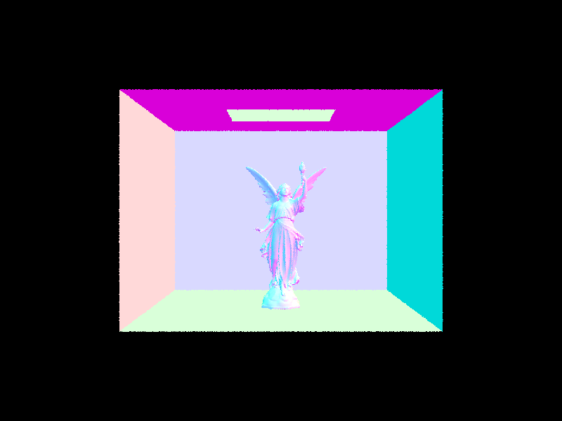
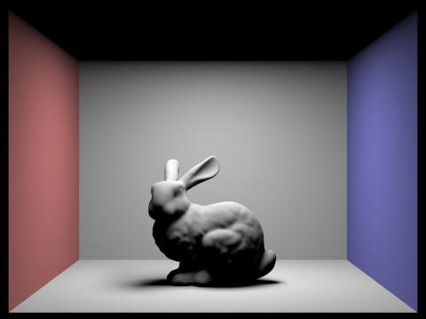

CS184/284A Spring 2025 Homework 3 Write-Up
Link to webpage: cal-cs184-student.github.io/hw-webpages-my-webpages/hw3/index.html
Link to GitHub repository: github.com/cal-cs184-student/sp25-hw3-team-superidol
Overview
In this assignment, I built a path tracer from the ground up, implementing a series of core components that are essential for rendering realistic images using ray tracing. The project was divided into several key parts, each building on the previous one to create a fully functional rendering system. Here's a high-level breakdown of what was implemented:
- Ray Generation and Scene Intersection
- Ray Generation: Converts screen coordinates into world-space rays based on camera parameters.
- Triangle Intersection: Uses the Möller-Trumbore algorithm to check for ray-triangle intersections.
- Sphere Intersection: Solves a quadratic equation to detect ray-sphere intersections.
- Bounding Volume Hierarchy (BVH)
- BVH Construction: Organizes primitives into a tree structure to speed up ray intersections.
- Performance Gains: Drastically reduces rendering times compared to brute-force intersection tests.
- Direct Illumination
- Uniform Hemisphere Sampling: Distributes samples evenly across a hemisphere but struggles with point lights.
- Importance Sampling: Focuses samples on light sources, improving efficiency.
- Soft Shadows: Increasing light rays per pixel reduces noise and improves shadow quality.
- Global Illumination
- Recursive Path Tracing: Captures indirect light bounces to improve realism.
- Russian Roulette Termination: Optimizes computation by probabilistically stopping ray recursion.
- Rendering Comparisons: Increasing samples per pixel and bounces enhances image quality while reducing noise.
- Adaptive Sampling
- Per-Pixel Convergence Checking: Uses the variance of color values to determine when a pixel has converged.
- Efficiency Gains: Stops sampling pixels that have stabilized, reducing unnecessary computations.
- Final Image Quality: Balances rendering speed and quality by allocating more samples to noisy areas.
One of the most interesting aspects was adaptive sampling, which taught me how to balance rendering quality and efficiency by focusing computational resources on noisy or complex regions. This technique, along with acceleration structures like BVH, dramatically reduced rendering times while maintaining high image quality. I also gained a deeper appreciation for the trade-offs between sampling strategies (hemisphere vs. importance sampling) and the power of global illumination in creating realistic lighting. Overall, this project not only solidified my understanding of path tracing but also inspired me to explore more advanced rendering techniques.
Part 1: Ray Generation and Scene Intersection
The ray generation process takes place in the Camera::generate_ray() method, which begins by handling normalized screen coordinates and field of view angles. The method converts horizontal and vertical field of view angles from degrees to radians, then calculates the sensor position using the tangent of half the field of view. This sensor coordinate is then transformed to create a ray direction. The process continues with ray construction, where a ray originates from the camera position and the sensor position is transformed using the camera-to-world matrix. The method sets minimum and maximum ray travel distances, and finally normalizes the sensor position to create a direction vector.
In the PathTracer::raytrace_pixel() method, multiple samples are generated for anti-aliasing purposes. The method creates rays for each sample using the generate_ray() function, traces these rays through the scene, and averages the radiance contributions to produce the final pixel color.
Triangle intersection is implemented using the Moller Trumbore Algorithm through two methods: has_intersection() and intersect(). The algorithm begins with preliminary calculations that compute two edges of the triangle and calculate a perpendicular vector using the cross product of ray direction and one edge. Next, it computes the determinant by taking the dot product of an edge and the perpendicular vector, checking if the ray is parallel to the triangle. If not parallel, the algorithm proceeds to calculate barycentric coordinates using dot products and validates these coordinates are within acceptable ranges. Finally, it computes the intersection distance and checks if it falls within the ray's travel range.
For sphere intersection, implemented in Sphere::test(), has_intersection(), and intersect(), the process involves setting up and solving a quadratic equation. The algorithm transforms the ray to the sphere's local space, computes the discriminant to determine if intersection occurs, and if positive, calculates two potential intersection distances. It then checks if these intersections fall within the ray's travel range. When using the intersect() method, additional details are calculated including the intersection point, surface normal, and information about the primitive and BSDF.
|
|

|
Part 2: Bounding Volume Hierarchy
The BVH construction process, implemented in BVHAccel::construct_bvh(), begins by computing the overall bounding box for all primitives within the given range. This initial bounding box serves as the enclosing volume for the entire set of primitives. If the number of primitives is less than or equal to the max_leaf_size, a leaf node is created. This ensures that leaf nodes do not contain an excessive number of primitives, which helps maintain a balanced and efficient tree structure.
A key heuristic in the algorithm involves computing the bounding box of the centroids of the primitives, rather than using their original bounding boxes. This centroid-based approach is crucial for determining how to split the primitives effectively. The algorithm then selects the axis with the longest extent in the centroid bounding box as the splitting axis. This heuristic ensures that the split is made along the dimension where the primitives are most spread out, which typically results in a more balanced subdivision of the space.
Once the axis is chosen, the splitting point is determined as the midpoint of the selected axis within the centroid bounding box. The primitives are then partitioned using std::partition() based on whether their centroids lie to the left or right of this splitting point. To ensure balance, the algorithm checks if the partition results in an overly unbalanced split (e.g., all primitives on one side). If this occurs, it falls back to splitting the primitives exactly in the middle, regardless of their centroid positions. Finally, the algorithm recursively constructs the left and right subtrees, repeating the process until the BVH is fully built. This combination of centroid-based heuristics and balancing checks ensures an efficient and well-structured BVH.
Here are the large dae files that can be rendered quickly.
|  | |

|

|
Here is the comparison between not using BVH and using BVH from left to right for each dae file, which is seen after "Rendering... 100%!"
|
|
|
|
|
|
|
|
|
BVH acceleration significantly improves rendering times for scenes with moderately complex geometries. Without BVH, ray tracing performs exhaustive checks on all objects, resulting in longer render times, especially for scenes with many or intricate geometries. BVH speeds up the process by organizing the scene into bounding volumes, allowing the renderer to quickly eliminate large portions of the scene that don’t intersect the ray. This hierarchical structure reduces the number of intersection tests, often decreasing rendering times by an order of magnitude, depending on scene complexity and BVH quality. Overall, BVH is a critical optimization for more efficient rendering.
Part 3: Direct Illumination
Hemisphere Sampling in the estimate_direct_lighting_hemisphere function works by uniformly sampling the hemisphere around the hit point to find direct lighting. The process begins by establishing a coordinate system at the hit point with the normal isect.n aligned with the Z direction, calculating the hit point position as hit_p = r.o + r.d * isect.t, and transforming the outgoing direction into object space as w_out = w2o * (-r.d). The number of samples is determined by multiplying the number of lights in the scene by the samples per light (ns_area_light). For each sample, the function generates a random direction wi in the hemisphere using hemisphereSampler->get_sample(), transforms this direction to world space with wi_world = o2w * wi, creates a ray from the hit point in that direction, and tests for intersection with the scene using the BVH. When the ray intersects an emissive object (light), the function calculates the BSDF value as f = isect.bsdf->f(w_out, wi), determines the PDF for hemisphere sampling as pdf = 1.0 / (2.0 * PI), gets the emitted radiance as Li = new_isect.bsdf->get_emission(), computes the contribution as f * Li * cos_theta(wi) / pdf, and adds this contribution to the output radiance L_out. The final result is the average radiance, calculated by dividing L_out by the number of samples.
Importance Sampling in the estimate_direct_lighting_importance function takes a more efficient approach by sampling directly from the lights in the scene, focusing samples where they matter most. Like hemisphere sampling, it starts by creating a coordinate system and computing the hit point and outgoing direction. The function then iterates through each light in the scene, initializing a contribution accumulator L_light for each one. For delta lights, it takes just one sample, while for area lights, it takes multiple samples based on ns_area_light. In the sampling loop for each light, the function gets a point on the light and its emission using light->sample_L(), converts the world space direction to local coordinates with wi = w2o * wi_world, creates a shadow ray from the hit point toward the light, and tests for occlusion using the BVH. If no occlusion is found, it evaluates the BSDF as f = isect.bsdf->f(w_out, wi) and computes the contribution as L_light += f * L_i * cos_theta(wi) / pdf. For area lights, it averages the results by dividing by the number of samples. The final result normalizes by the number of lights with L_out /= scene->lights.size() and returns the total accumulated radiance L_out.
Here's some images with uniform hemisphere sampling:

|

|
Here's some images with importance sampling lights:
Uniform hemisphere sampling distributes samples evenly across the hemisphere, ensuring smooth, unbiased lighting, especially in diffuse lighting. While it works well for general illumination, it's inefficient for focused or directional light, as it doesn't prioritize stronger light regions. In contrast, lighting sampling focuses more on areas with higher light intensity, improving efficiency and accuracy in scenes with concentrated light. However, it can introduce noise in darker areas since fewer samples are allocated there. Overall, uniform sampling offers balanced results for general lighting, while lighting sampling excels in capturing strong light sources but may cause noise in low-light regions.
Here's the different renderings of 1, 4, 16, and 64 light rays:
|
|
|
|
|
|
When comparing noise levels in soft shadows across different light ray samples (1, 4, 16, and 64) using light sampling in a scene with at least one area light and 1 sample per pixel, the results exhibit a clear progression. With just 1 light ray, the shadows are notably noisy, as the limited sampling results in inconsistent shadow transitions, and fine details like soft edges become obscured by grainy artifacts. As the number of light rays increases to 4, the noise in the shadows reduces significantly, though some grain remains visible, especially in areas where light transitions are subtler. At 16 rays, the noise levels drop even further, with soft shadows becoming smoother and more defined, showing less fluctuation in light intensity. Finally, with 64 light rays, the shadows are almost entirely free of noise, and the soft shadow transitions appear more natural and precise. This progression highlights how increasing the number of light rays allows for finer light sampling, reducing noise and improving the realism of soft shadows in the rendered scene.
Part 4: Global Illumination
Implementing the global illumination was very challenging, but very rewarding. Here's how it was implemented:
The first thing to do was to update the raytrace_pixel function, and make it so that the number of rays' depths is max_ray_depth. Next thing to update is est_radiance_global_illuminaton. Given isAccumBounces, I needed to make some conditions based on isAccumBounces. If isAccumBounces is true, set L_out to be adding both the zero_bounce_radiance and at_least_one_bounce_radiance. There's a few checks for when isAccumBounces is false. If depth is 1, set L_out to be only one_bounce_radiance. If depth is 0, L_out is set to zero_bounce_radiance. If depth is greater than 1, L_out is set as at_least_one_bounce_radiance.
The second thing to do is to write the at_least_one_bounce_radiance. For base case handling, the function returns black (0,0,0) if ray depth is 0, which serves as the termination condition for recursion. When ray depth exceeds 0, the function adds one_bounce_radiance if isAccumBounces is true or if this is the first bounce, and returns immediately if ray depth is exactly 1 (representing direct illumination only).
For deeper recursion (ray depth > 1), the implementation employs Russian Roulette with a 70% continuation probability to optimize computation. If continuing, it samples a new direction (w_in) using the BSDF, transforms this direction to world space, and creates a new ray from the hit point in the sampled direction. When a BVH intersection is found, the function recursively calls itself and applies the rendering equation by multiplying the recursive result by the BSDF value and cosine term, then dividing by the PDF. Based on isAccumBounces, it either accumulates this result (adding to L_out) or replaces L_out entirely. After that, L_out is returned.
Here's some photos that's rendered with global illumination using 1024 samples per pixel:
Here's the bunny rendered with only direct illumination and indirect illumination from left to right:
With only direct illumination, the scene appears sharp and high-contrast, with clear highlights where the light hits and deep, defined shadows in areas that are not lit. This creates a dramatic, but flat, look, as the lighting lacks subtlety and depth. The sharp transitions between light and shadow emphasize the textures and details where the light strikes, but the overall atmosphere feels stark and less natural.
In contrast, with only indirect illumination, the lighting is much softer and more evenly spread across the scene. Shadows become diffused, with smooth gradients instead of sharp lines, giving the environment a more natural and immersive feel. The lack of direct light makes the scene feel more subtle and balanced, but it loses some of the sharp focus and intensity that direct illumination brings. While the scene feels more cohesive, the absence of highlights means details may not stand out as much.
Here's the bunny rendered with mth bounce with max_ray_depth set to 0, 1, 2, 3, 4, 5 and isAccumBounces=false and isAccumBounces=true where false is left and true is right:
|  | |
In the 2nd bounce of light, indirect illumination plays a significant role in brightening the scene. The colored walls—red on the left and blue on the right—contribute to global illumination by subtly casting their hues onto the bunny and surrounding surfaces. Since the light has bounced once off the walls and then again onto the objects, the scene exhibits softer shadows and more realistic lighting compared to just direct illumination. In the 3rd bounce of light (right image), the scene appears slightly darker due to the diminishing energy of each successive light bounce. However, the effects of color bleeding from the walls become more refined, and global illumination continues to enhance the realism of the scene. The differences between the 2nd and 3rd bounces are less drastic than between the 1st and 2nd, but they still contribute to a more natural lighting effect. Compared to rasterization, which only considers direct lighting and often relies on approximations like screen-space ambient occlusion for indirect effects, ray tracing with multiple bounces provides a far more accurate representation of how light interacts with surfaces. The inclusion of these additional bounces is crucial for achieving photorealism, as they capture nuanced lighting effects such as indirect illumination and color bleeding that rasterization methods struggle to replicate.
On the left (isAccumBounces=false), each bounce depth is isolated, while on the right (isAccumBounces=true), bounces build up for more realistic lighting.
At max_ray_depth = 0, both sides are black due to no light reaching surfaces. With depth = 1, direct lighting appears, but only accumulated bounces introduce realistic indirect lighting as depth increases. The left side remains darker and less realistic, while the right side captures indirect illumination, colored reflections from walls, and softer shadows. By depth = 5, the accumulated version closely resembles physically accurate global illumination, demonstrating the importance of multiple light bounces for realism.
Here's the bunny with Russian roulette and max_ray_depth set to 0, 1, 2, 3, 4, and 100 with 1024 samples per pixel:
|
|
|
|
|
|
|
|
|
Here's the bunny with 4 light rays and 1, 2, 4, 8, 16, 64, and 1024 samples per pixel:
|
|
|
|
|
|
|
|
|
When comparing rendered views of a scene with various sample-per-pixel (SPP) rates, including 1, 2, 4, 8, 16, 64, and 1024, using 4 light rays per pixel, I observed a clear progression in image quality and rendering time. At 1 SPP, the image is extremely noisy, with each pixel only sampled once, resulting in high variance and poor overall quality. As I increased to 2 and 4 SPP, the noise begins to reduce noticeably, but the image still appears grainy. At 8 and 16 SPP, there's a significant improvement in image quality, with much smoother transitions and clearer details emerging. The jump to 64 SPP brings us close to a visually pleasing result, with most of the noise eliminated and fine details becoming sharp and clear. Finally, at 1024 SPP, there is a near-perfect, photorealistic image with virtually no visible noise. However, it's important to note that the rendering time increases exponentially with higher SPP values. The use of 4 light rays per pixel ensures that even at lower SPP rates, some global illumination effects are captured, contributing to the overall realism of the scene. This comparison highlights the trade-off between image quality and rendering efficiency, with most practical applications finding a sweet spot around 16 to 64 SPP for a balance of quality and reasonable rendering times.
Part 5: Adaptive Sampling
Adaptive sampling is a technique used to optimize rendering performance by allocating more computational resources to complex or noisy parts of an image while using fewer samples in areas that converge quickly. This approach significantly improves efficiency compared to uniform sampling.
To implement adaptive sampling, I initialize some variables, like the maximum number of samples per pixel, pixel origin coordinates, a Vector3D sum for color values, s1 and s2, which are the statistical accumulators for luminance, and a counter for actual samples used.
The main sampling loop then takes samples up to the maximum allowed number, periodically checking convergence after processing batches of samples. During convergence testing, the mean luminance is calculated from all samples collected so far, along with the variance using the formula (1/(n-1)) * (s2 - s1²/n). A 95% confidence interval is computed using 1.96 * sqrt(variance/n) and compared against a tolerance threshold. If the confidence interval is small enough relative to the mean (I <= maxTolerance * mean), sampling can stop early.
For each sample, the process involves generating a sample position within the pixel using a grid sampler, converting the sample to normalized coordinates, generating a camera ray, and tracing it through the scene to get radiance. The statistical accumulators are updated with each sample: s1 is incremented by the sample luminance, s2 by the sample luminance squared, and pixel_sum by the full color sample. Finally, the average color is calculated from all samples, the pixel is updated in the sample buffer, and the number of samples used is recorded in a separate buffer.
|
|
|
|
|
|